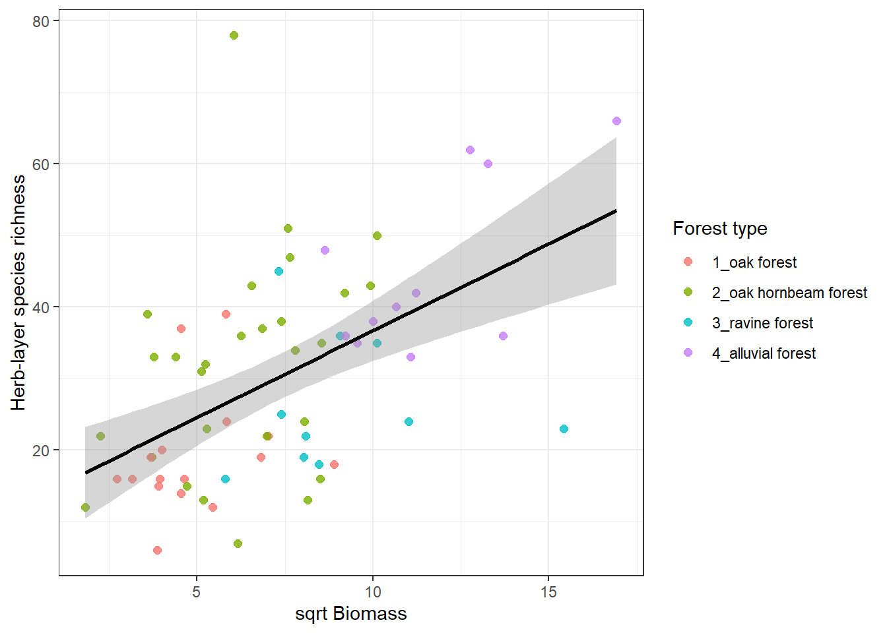
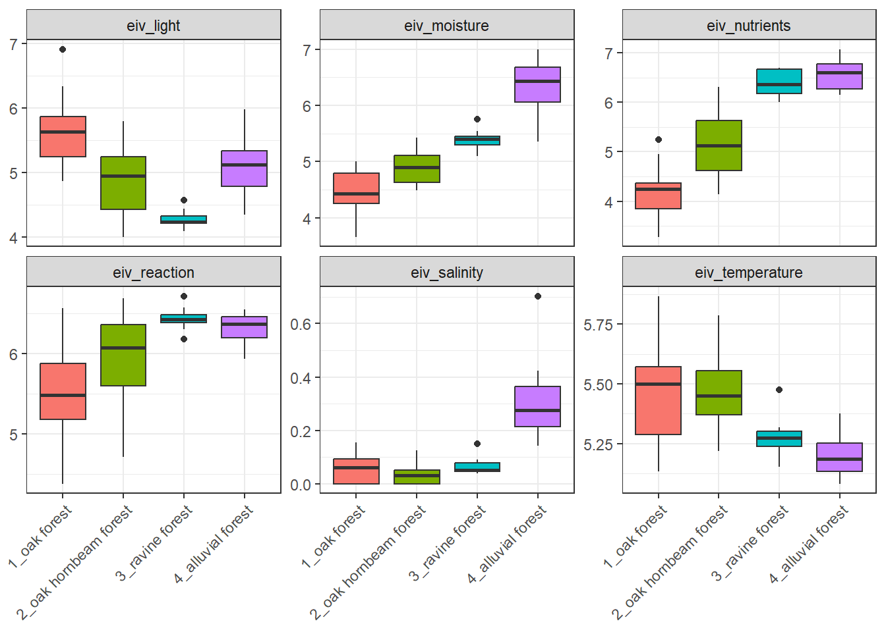

library(tidyverse)
library(janitor)Basic data analyses
In this tutorial we will show you how to sort and filter the data. We will also train how to append traits, indicator values or information about status of species and calculate proportions of selected plant groups, community weighted and unweighted means or other summary statistics. If you are interested in more general overview of the functions, you are encouraged to check also our study materials here.
2.1 Data import
We will play a bit with measured variables from our plots and try few useful functions. For more see study materials and links there. We will first read the data newly, to be sure we know what we are working with. At this point we can actually clean the environment, remove everything.
2.1.1 env dataset
First I want to add some more variables that were measured separately. In addition this file is already filtered to a subset I want to use.
env_extra<- read_csv("data/axmanova_forest_env_extra.csv")%>%
clean_names()Rows: 65 Columns: 22
── Column specification ────────────────────────────────────────────────────────
Delimiter: ","
chr (1): ForestTypeName
dbl (21): Releve_nr, ForestType, Herbs, Juveniles, CoverE1, Biomass, Soil_de...
ℹ Use `spec()` to retrieve the full column specification for this data.
ℹ Specify the column types or set `show_col_types = FALSE` to quiet this message.For env dataset I want to import the clean version which was saved in the previous script, but I will directly filter it to the same subset as in the dataset above. I can do it with semi_join. But I decided to merge both datasets at this point - to keep only the matching rows but all information I want. For more on joins see here.
env<- read_csv("data/env.csv") %>%
inner_join(env_extra %>%
select (releve_nr, forest_type, forest_type_name, soil_ph=p_h_k_cl, biomass)%>%
unite(forest, forest_type, forest_type_name))New names:
Rows: 137 Columns: 21
── Column specification
──────────────────────────────────────────────────────── Delimiter: "," chr
(6): coverscale, field_nr, country, author, syntaxon, locality dbl (15): ...1,
releve_nr, date, altitude, exposition, inclinatio, cov_trees...
ℹ Use `spec()` to retrieve the full column specification for this data. ℹ
Specify the column types or set `show_col_types = FALSE` to quiet this message.
Joining with `by = join_by(releve_nr)`
• `` -> `...1`2.1.2 spe dataset
I want to work with the spe dataset, and I want to keep information about layers, as I want to focus on the herb-layer.
spe <- read_csv ("data/spe_merged_covers.csv")%>%
semi_join(env)Rows: 4581 Columns: 4
── Column specification ────────────────────────────────────────────────────────
Delimiter: ","
chr (1): species
dbl (3): releve_nr, layer, cover_perc
ℹ Use `spec()` to retrieve the full column specification for this data.
ℹ Specify the column types or set `show_col_types = FALSE` to quiet this message.
Joining with `by = join_by(releve_nr)`2.1.3 traits
I also want to add some information about traits. So I will check what is available in my folder.
list.files("data") [1] "axmanova_forest_env_extra.csv" "cover_20230402.csv"
[3] "CzechVeg_tutorial.zip" "data.zip"
[5] "env.csv" "indicator_values.csv"
[7] "nomenclature_20251108.csv" "nomenclature_check.csv"
[9] "plant_height.csv" "readme.txt"
[11] "remarks.cdx" "remarks.dbf"
[13] "spe.csv" "spe_merged_covers.csv"
[15] "spe_merged_covers_across_layers.csv" "species.csv"
[17] "status.csv" "traits.csv"
[19] "tvabund.cdx" "tvabund.csv"
[21] "tvabund.dbf" "tvabund.xlsx"
[23] "TvAdmin.cdx" "TvAdmin.dbf"
[25] "tvhabita.cdx" "tvhabita.csv"
[27] "tvhabita.dbf" "tvhabita.xlsx"
[29] "tvwin.dbf" I will import plant height data, Ellenberg-type indicator values and status (origin and Red List categories). All these data are available in the PLADIAS database of the Czech flora and vegetation. I used the datasets from the download section and adjusted the format for easier data handling.
plant_height<- read_csv("data/plant_height.csv")Rows: 3258 Columns: 4
── Column specification ────────────────────────────────────────────────────────
Delimiter: ","
chr (1): species
dbl (3): height_min, height_max, height_mean
ℹ Use `spec()` to retrieve the full column specification for this data.
ℹ Specify the column types or set `show_col_types = FALSE` to quiet this message.indicator_values <- read_csv("data/indicator_values.csv")Rows: 3076 Columns: 7
── Column specification ────────────────────────────────────────────────────────
Delimiter: ","
chr (1): species
dbl (6): eiv_light, eiv_temperature, eiv_moisture, eiv_reaction, eiv_nutrien...
ℹ Use `spec()` to retrieve the full column specification for this data.
ℹ Specify the column types or set `show_col_types = FALSE` to quiet this message.status <- read_csv("data/status.csv")Rows: 5752 Columns: 3
── Column specification ────────────────────────────────────────────────────────
Delimiter: ","
chr (3): species, origin, redlist
ℹ Use `spec()` to retrieve the full column specification for this data.
ℹ Specify the column types or set `show_col_types = FALSE` to quiet this message.2.2 Basic data handling
Select extracts columns/variables based on their names or position. Select can be also used in combination with stringr package to identify the pattern in the names: try several options: starts_with, ends_with or more general one contains. With the use of select in your script you can order the variables always in the same way e.g. ID, forest type, species number, productivity, even during import. And you can also rename the variables using select, to get exactly what you need.
env_extra %>%
select(ID=releve_nr, forest_type=forest_type_name, species_nr=herbs, productivity=biomass) # A tibble: 65 × 4
ID forest_type species_nr productivity
<dbl> <chr> <dbl> <dbl>
1 1 oak hornbeam forest 26 12.8
2 2 oak forest 13 9.9
3 3 oak forest 14 15.2
4 4 oak forest 15 16
5 5 oak forest 13 20.7
6 6 oak forest 16 46.4
7 7 oak forest 17 49.2
8 8 oak hornbeam forest 21 48.7
9 9 oak hornbeam forest 15 13.8
10 10 oak forest 14 79.1
# ℹ 55 more rowsDistinct is a function that takes your data and remove all the duplicate rows, keeping only the unique ones. There are many cases where you will really appreciate this elegant and easy way. For example, I want a list of unique PlotIDs= releve_nr, unique combinations of two categories etc. Here I want to prepare list of forest types codes and names.
env_extra %>%
arrange(forest_type) %>%
distinct(forest_type,forest_type_name)# A tibble: 4 × 2
forest_type forest_type_name
<dbl> <chr>
1 1 oak forest
2 2 oak hornbeam forest
3 3 ravine forest
4 4 alluvial forest When we have a large dataset, we sometimes need to create a subset of the rows/cases by filter. First we have to define upon which variable we are going to filter the rows (e.g. Forest type, soil pH…) and which values are acceptable and which are not. Here I keep only plots from a type that exactly match.
env_extra %>%
filter(forest_type_name =="alluvial forest")# A tibble: 11 × 22
releve_nr forest_type forest_type_name herbs juveniles cover_e1 biomass
<dbl> <dbl> <chr> <dbl> <dbl> <dbl> <dbl>
1 101 4 alluvial forest 28 6 90 91.1
2 103 4 alluvial forest 35 5 80 114.
3 104 4 alluvial forest 25 11 85 188.
4 110 4 alluvial forest 37 4 95 126.
5 111 4 alluvial forest 26 10 85 84.8
6 113 4 alluvial forest 37 10 70 74.5
7 125 4 alluvial forest 25 8 95 123.
8 127 4 alluvial forest 53 6 0 176
9 129 4 alluvial forest 31 7 85 100.
10 131 4 alluvial forest 59 3 95 163.
11 132 4 alluvial forest 60 7 90 287.
# ℹ 15 more variables: soil_depth_categ <dbl>, p_h_k_cl <dbl>, slope <dbl>,
# altitude <dbl>, canopy_e3 <dbl>, radiation <dbl>, heat <dbl>,
# trans_dir <dbl>, trans_dif <dbl>, trans_tot <dbl>, eiv_light <dbl>,
# eiv_moisture <dbl>, eiv_soilreaction <dbl>, eiv_nutrients <dbl>, twi <dbl>or those that are listed
env_extra %>%
filter(forest_type_name %in% c("alluvial forest", "ravine forest"))# A tibble: 21 × 22
releve_nr forest_type forest_type_name herbs juveniles cover_e1 biomass
<dbl> <dbl> <chr> <dbl> <dbl> <dbl> <dbl>
1 101 4 alluvial forest 28 6 90 91.1
2 103 4 alluvial forest 35 5 80 114.
3 104 4 alluvial forest 25 11 85 188.
4 105 3 ravine forest 12 10 80 65.5
5 106 3 ravine forest 16 0 75 33.6
6 108 3 ravine forest 28 7 70 82.3
7 110 4 alluvial forest 37 4 95 126.
8 111 4 alluvial forest 26 10 85 84.8
9 113 4 alluvial forest 37 10 70 74.5
10 114 3 ravine forest 12 6 50 71.5
# ℹ 11 more rows
# ℹ 15 more variables: soil_depth_categ <dbl>, p_h_k_cl <dbl>, slope <dbl>,
# altitude <dbl>, canopy_e3 <dbl>, radiation <dbl>, heat <dbl>,
# trans_dir <dbl>, trans_dif <dbl>, trans_tot <dbl>, eiv_light <dbl>,
# eiv_moisture <dbl>, eiv_soilreaction <dbl>, eiv_nutrients <dbl>, twi <dbl>Or I want to filter based on some values. If I have at the same time NAs in the variable, I should specify if I want to keep these rows or not. In the example below I will keep all rows/plots where biomass is higher than 80g/m2 but I will also keep all the NAs, i.e. plots where it was not measured.
env_extra %>%
filter(biomass>80 |is.na(biomass))# A tibble: 17 × 22
releve_nr forest_type forest_type_name herbs juveniles cover_e1 biomass
<dbl> <dbl> <chr> <dbl> <dbl> <dbl> <dbl>
1 101 4 alluvial forest 28 6 90 91.1
2 103 4 alluvial forest 35 5 80 114.
3 104 4 alluvial forest 25 11 85 188.
4 108 3 ravine forest 28 7 70 82.3
5 110 4 alluvial forest 37 4 95 126.
6 111 4 alluvial forest 26 10 85 84.8
7 120 2 oak hornbeam forest 36 6 75 98.5
8 121 2 oak hornbeam forest 30 12 80 84.7
9 122 3 ravine forest 29 6 60 102.
10 124 2 oak hornbeam forest 34 15 75 102.
11 125 4 alluvial forest 25 8 95 123.
12 127 4 alluvial forest 53 6 0 176
13 128 3 ravine forest 20 4 70 121.
14 129 4 alluvial forest 31 7 85 100.
15 130 3 ravine forest 18 5 85 238
16 131 4 alluvial forest 59 3 95 163.
17 132 4 alluvial forest 60 7 90 287.
# ℹ 15 more variables: soil_depth_categ <dbl>, p_h_k_cl <dbl>, slope <dbl>,
# altitude <dbl>, canopy_e3 <dbl>, radiation <dbl>, heat <dbl>,
# trans_dir <dbl>, trans_dif <dbl>, trans_tot <dbl>, eiv_light <dbl>,
# eiv_moisture <dbl>, eiv_soilreaction <dbl>, eiv_nutrients <dbl>, twi <dbl>You can also filter plots in a specified range of some value.
env_extra %>%
filter((biomass >= 40 & biomass <= 80) | is.na(biomass))# A tibble: 20 × 22
releve_nr forest_type forest_type_name herbs juveniles cover_e1 biomass
<dbl> <dbl> <chr> <dbl> <dbl> <dbl> <dbl>
1 6 1 oak forest 16 3 60 46.4
2 7 1 oak forest 17 5 70 49.2
3 8 2 oak hornbeam forest 21 1 70 48.7
4 10 1 oak forest 14 4 75 79.1
5 18 2 oak hornbeam forest 13 3 85 72.2
6 86 2 oak hornbeam forest 32 5 40 46.9
7 87 2 oak hornbeam forest 34 9 65 42.9
8 99 2 oak hornbeam forest 18 6 85 64.8
9 102 2 oak hornbeam forest 37 13 65 57.4
10 105 3 ravine forest 12 10 80 65.5
11 109 2 oak hornbeam forest 25 9 50 60.7
12 112 2 oak hornbeam forest 32 14 60 58.4
13 113 4 alluvial forest 37 10 70 74.5
14 114 3 ravine forest 12 6 50 71.5
15 115 3 ravine forest 23 2 70 54.6
16 116 3 ravine forest 16 3 45 64.5
17 117 2 oak hornbeam forest 31 7 55 54.7
18 118 2 oak hornbeam forest 8 5 45 66.2
19 123 3 ravine forest 34 11 70 53.6
20 126 2 oak hornbeam forest 27 7 65 72.9
# ℹ 15 more variables: soil_depth_categ <dbl>, p_h_k_cl <dbl>, slope <dbl>,
# altitude <dbl>, canopy_e3 <dbl>, radiation <dbl>, heat <dbl>,
# trans_dir <dbl>, trans_dif <dbl>, trans_tot <dbl>, eiv_light <dbl>,
# eiv_moisture <dbl>, eiv_soilreaction <dbl>, eiv_nutrients <dbl>, twi <dbl>Similarly, you can for example filter plots based on their plot size. The example below is not working on our dataset, but it comes useful in large EVA exports. Here I keep grassland plots in the range 10-100 m2, forest plots between 100-1000 m2 and I keep the plots without specified plot size.
env %>%
filter(
(habitat == "grassland" & plot_size >= 10 & plot_size <= 100) |
(habitat == "forest" & plot_size >= 100 & plot_size <= 1000) |
is.na(plot_size)
)2.3 Summarise
I will a bit explore the data and ask about which factors influence species richness. Here are just few examples, we will read together the scripts and you will adopt them later to other tasks. First I want to produce a table with summary statistics like min, mean, max for two variables plant height, and biomass per forest type. The first one is a trait, so we need to append it to species file and calculate community means, while the other is a variable measured in each plot.
Combine and summarise different variables / explanation will be added
spe %>%
filter(layer == "6") %>%
left_join(plant_height %>%
select(species, height = height_mean)) %>%
left_join(env) %>%
arrange(forest) %>%
summarise(across(c(height,cov_herbs, biomass, cov_trees,soil_ph ),
list(
min = ~min(.x, na.rm = TRUE),
mean = ~mean(.x, na.rm = TRUE),
max = ~max(.x, na.rm = TRUE))),.by = forest)Joining with `by = join_by(species)`
Joining with `by = join_by(releve_nr)`# A tibble: 4 × 16
forest height_min height_mean height_max cov_herbs_min cov_herbs_mean
<chr> <dbl> <dbl> <dbl> <dbl> <dbl>
1 1_oak forest 0.075 0.495 1.45 8 37.2
2 2_oak hornbeam… 0.055 0.497 15 7 55.6
3 3_ravine forest 0.085 0.505 1.45 45 67.8
4 4_alluvial for… 0.055 0.707 8.5 0 76.2
# ℹ 10 more variables: cov_herbs_max <dbl>, biomass_min <dbl>,
# biomass_mean <dbl>, biomass_max <dbl>, cov_trees_min <dbl>,
# cov_trees_mean <dbl>, cov_trees_max <dbl>, soil_ph_min <dbl>,
# soil_ph_mean <dbl>, soil_ph_max <dbl>env %>%
arrange(forest) %>%
select(forest, cover_herbs=cov_herbs, biomass, cover_trees =cov_trees, soil_ph) %>%
tidyr::pivot_longer(
cols = c(cover_herbs, biomass, cover_trees, soil_ph),
names_to = "variable",
values_to = "value")%>%
ggplot(aes(x = forest, y = value, fill=forest)) +
geom_boxplot() +
facet_wrap(~ variable, scales = "free_y") +
theme_bw() +
theme(legend.position = 'none')+
theme(axis.text.x = element_text(angle = 45, hjust = 1))+
labs(x = NULL) +
labs (y = NULL)
I might be interested in species richness relationship with several factors. Below is an example of herb-layer species richness and biomass. At first I need to calculate the species richness in the spe file. And as an output I want to plot this with different colours for different forest types but keep the regression line for the whole dataset.
spe %>%
filter(layer %in% c(6, 7)) %>%
count(releve_nr, name = "herblayer_richness") %>%
left_join(env %>%
select(releve_nr, biomass, forest), by = "releve_nr") %>%
ggplot(aes(x = sqrt(biomass), y = herblayer_richness)) +
geom_point(aes(colour = forest), size = 2, alpha = 0.8) +
geom_smooth(method = "lm", se = TRUE, colour = "black") +
theme_bw() +
labs(
x = "sqrt Biomass",
y = "Herb-layer species richness",
colour = "Forest type"
)`geom_smooth()` using formula = 'y ~ x'
Proportions of endangered or alien species in forest type. I will first look at the numbers of these species, here on example of redlist i.e. endangered species. I just one to see average number of redlist species per forest type.
spe%>%
left_join(spe %>%
left_join(status)%>%
filter(!is.na(redlist))%>%
count(releve_nr, name="richness_redlist"))%>%
left_join(spe %>%
summarise(richness_all = n_distinct(species),
.by = releve_nr))%>%
distinct(releve_nr,richness_redlist,richness_all)%>%
mutate(richness_redlist = replace_na(richness_redlist, 0))%>%
mutate(richness_redlist_perc= richness_redlist/richness_all*100)%>%
left_join(env%>% select(releve_nr, forest))%>%
summarise(redlist_mean_perc = mean(richness_redlist_perc), .by=forest)%>%
arrange(forest)Joining with `by = join_by(species)`
Joining with `by = join_by(releve_nr)`
Joining with `by = join_by(releve_nr)`
Joining with `by = join_by(releve_nr)`# A tibble: 4 × 2
forest redlist_mean_perc
<chr> <dbl>
1 1_oak forest 6.25
2 2_oak hornbeam forest 6.24
3 3_ravine forest 5.03
4 4_alluvial forest 1.71But I can also ask about diferences in abundances of some plant groups. What is the proportion of cover of alien species relative to total cover in different forests? I will again use the function we used for cover combination during import from Turboveg.
combine_cover <- function(x){
while (length(x)>1){
x[2] <- x[1]+(100-x[1])*x[2]/100
x <- x[-1]
}
return(x)
}spe%>%
left_join(spe %>%
left_join(status)%>%
filter(origin %in% c("arch","neo"))%>%
summarize(cover_alien = combine_cover(cover_perc),
.by=releve_nr))%>%
left_join(spe %>%
summarize(cover_total = combine_cover(cover_perc),
.by=releve_nr))%>%
distinct(releve_nr, cover_alien, cover_total)%>%
mutate(cover_alien = replace_na(cover_alien, 0))%>%
mutate(cover_alien_perc= cover_alien/cover_total*100)%>%
left_join(env%>% select(releve_nr, forest))%>%
summarise(alien_cover_mean_perc = mean(cover_alien_perc), .by=forest)%>%
arrange(forest)Joining with `by = join_by(species)`
Joining with `by = join_by(releve_nr)`
Joining with `by = join_by(releve_nr)`
Joining with `by = join_by(releve_nr)`# A tibble: 4 × 2
forest alien_cover_mean_perc
<chr> <dbl>
1 1_oak forest 0.0188
2 2_oak hornbeam forest 1.24
3 3_ravine forest 3.11
4 4_alluvial forest 3.44 2.4 Community weighted means
Summarise is often used for getting so-called community means or community weighted means. For example we have traits for individual species and we want to calculate a mean for each site and compare it. We can also consider to use abundance to weight the result. This is called community weighted mean and it simply gives higher importance to those species that are more abundant and lower importance to the rare once. Here the abundance is approximated as percentage cover in the site. The example below compares mean plant height both weighted and unweighted. To have meaningful values, I looked just at the herb-layers species.
spe %>%
left_join(plant_height) %>%
filter(layer==6)%>%
summarise(meanHeight= mean(height_mean, na.rm=T),
meanHeight_weighted = weighted.mean(height_mean, cover_perc, na.rm = TRUE),
.by=releve_nr)Joining with `by = join_by(species)`# A tibble: 65 × 3
releve_nr meanHeight meanHeight_weighted
<dbl> <dbl> <dbl>
1 1 0.364 0.322
2 2 0.459 0.504
3 3 0.408 0.388
4 4 0.570 0.515
5 5 0.566 0.528
6 6 0.577 0.573
7 7 0.498 0.559
8 8 0.423 0.710
9 9 0.543 0.494
10 10 0.5 0.527
# ℹ 55 more rows2.5 Ellenberg indicator values
In the same way we can calculate community means across more variables. Here we will try the Ellenberg indicator values (abbreviated as EIV, measures of species demands for the particular factors, the higher value mean higher demands or affinity to habitats with higher values of these environmental factors). We will apply them just for presences of species, so no weights. Therefore we do not need to care that much for the differences among layers. However, we will keep each species only once (list of unique species for each plot), so we will remove information about layers first and use distinct. Alternative is to add #filter(Layer==6)%>% if we want to focus on herb-layer only
spe %>%
left_join(indicator_values) %>%
select(-c(layer,cover_perc))%>%
distinct()%>%
group_by(releve_nr)%>%
summarise(across(starts_with("eiv"), ~ mean(.x, na.rm = TRUE)))Joining with `by = join_by(species)`# A tibble: 65 × 7
releve_nr eiv_light eiv_temperature eiv_moisture eiv_reaction eiv_nutrients
<dbl> <dbl> <dbl> <dbl> <dbl> <dbl>
1 1 5.08 5.55 4.63 6.53 4.95
2 2 4.87 5.2 4.8 5 4.33
3 3 4.87 5.13 4.8 5 4.4
4 4 5.32 5.53 4.47 5.79 4.26
5 5 6.07 5.57 4.14 5.57 3.86
6 6 5.69 5.56 4.44 6.56 5.25
7 7 5.74 5.47 4.42 6.26 4.95
8 8 5 5.38 4.67 5.43 4.62
9 9 5.26 5.74 4.53 6 4.58
10 10 6.33 5.87 3.73 6.13 3.8
# ℹ 55 more rows
# ℹ 1 more variable: eiv_salinity <dbl>Boxplots of Ellenberg-type indicator values can be produced for example like this:
spe %>%
left_join(indicator_values) %>%
select(-c(layer, cover_perc)) %>%
distinct() %>%
group_by(releve_nr) %>%
summarise(across(starts_with("EIV"), ~ mean(.x, na.rm = TRUE))) %>%
left_join(env %>% select(releve_nr, forest))%>%
pivot_longer(
cols = starts_with("EIV"),
names_to = "EIV_variable",
values_to = "value")%>%
ggplot(aes(x = forest, y = value, fill = forest)) +
geom_boxplot() +
facet_wrap(~ EIV_variable, scales = "free_y") +
theme_bw()+
theme(legend.position = 'none')+
theme(axis.text.x = element_text(angle = 45, hjust = 1))+
labs(x = NULL) +
labs (y = NULL)Joining with `by = join_by(species)`
Joining with `by = join_by(releve_nr)`